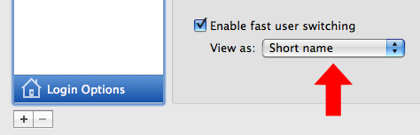
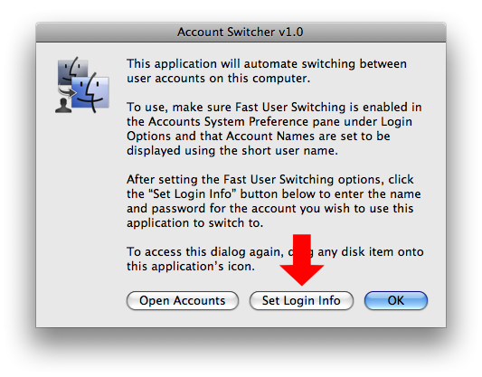
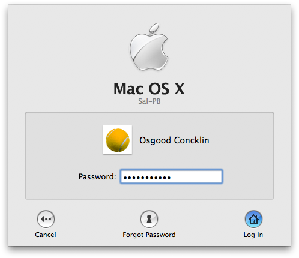

Account Switcher
If you've ever had the need to quickly switch between user accounts on the computer, this applet provides a easy one-click method for doing so. Set up the applet preferences, place it in the Dock, and you're a single-click away from an automatic user change.
Setup
In the Accounts System Preference pane, enable fast user switching in the Login Options, and set the account view mode for Short Name.

Launch the Account Switcher applet and click the Set Login Info button to enter the name and password for the account you wish to switch to.

Once the login information have been set, click the OK button in the opening dialog to close the application. Drag the applet's icon to the Dock. Click the applet icon in the Dock and it will automatically summon and fill-in the login dialog for the targeted user account:

Notes
The Account Switcher applet uses the UI Scripting controls enabled when support for assistive devices is actived in the Universal Access System Preference pane. If this ability is not active, the script will post an administrative approval dialog to activate its support the first time the applet is run.
If you want to access the main dialog of the applet to change or disable settings, drag any disk item onto the application's icon.
IMPORTANT: The stored login information is not encrypted or secured and can be retrieved programatically from the applet. Use only for convienience in a low-security situation.
Download
You may download the Account Switcher applet here.